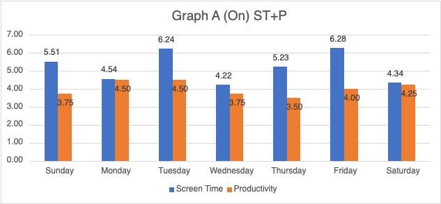

Life After Invention of the Smartphone
As smartphones became widespread, the constant stream of notifications, social media, and instant messaging began to interrupt work. Attention spans decreased, and multitasking became the norm, reducing the quality and efficiency of work.
How It Affected Us
Productivity was at an all time low with notific ations and calls going off every few minutes. the mobile phone allowed people to scroll on the internet whenever they wanted. They had everything they wanted in their pocket, which was too big of a distraction when it came to work and labor. 
Social Interactions After Smartphones
After the invention of smartphones, people started to interact less and be more self centered and shy. Social skills were at an all time low with more people being online and interacting more on screens than face to face.